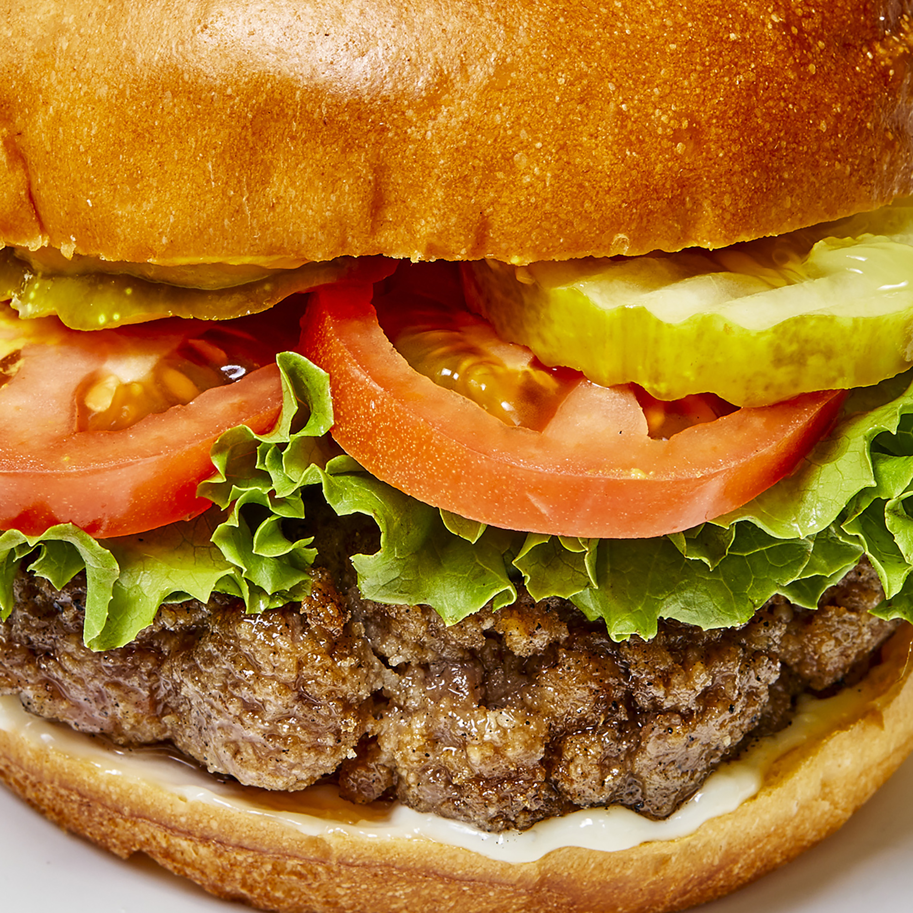

Hamburgers

Description
Ingredients:
- Meat: 2lbs ground beef
- Egg: 1, beaten
- Bread crumbs: 3/4 cup
- Evaporated milk: 3 tbsp
- Sauce: 2 tbsp Worcestershire sauce
- Spices and seasonings: 1/8 tsp cayenne pepper
- Garlic: 2 cloves, minced
Steps:
- Grill: Preheat the grill for high heat
- Prepping the meat: Mix the ground beef, egg, bread crumbs, evaporated milk, Worcestershire sauce, cayenne pepper, and garlic in a large bowl using your hands. Form the mixture into 8 hamburger patties
- Cooking the meat: Lightly oil the grill grate. Grill patties until browned and no longer pink, about 5 minutes per side
- Assemble the hamburger: Layer the burger with your favortie buns(seseme buns work great!), sliced tomato, and fresh lettuce
back